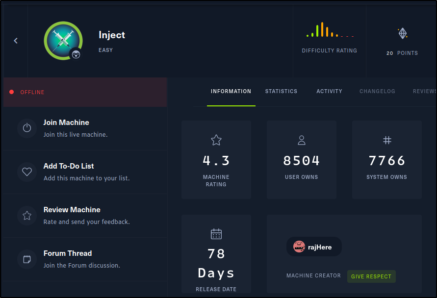

Lets start off with a nmap scan..

We will come back to look for exploits on Nagios. Let's check out whats on port 8080

We have an /upload page and a /register page. Let's check out the upload page and see if we can upload something without signing up.
And it looks like we can upload an image file, time to view our newly uploaded file.. (maybe we can **inject** a php reverse shell using burp..)


Hmmm... lets try **LFI**

We get a 500 error code.. Maybe we didnt go far enough back to make it to the root directory..
Using curl we are able to see that is indeed the problem.

Looks like we need to go back 2 more directories.

????... Let's check the output using curl...

We have **LFI** and also 2 users on this machine, Frank and Phil. Lets check for any id_rsa keys for these users.

Looks like no id_rsa key for Frank or Phil but we can further enumerate the machine to look for other interesting files by just searching directories.

ahhh a flag.. Tried to curl the user.txt but i dont have the right permissions.. Let's get a shell
Further enumerating the system using curl we come across


Let's check searchsploit.. This exploit might work. We can download this python script to our machine and test it out.

...
Let's see if we can get a meterpreter shell.
First we'll start metasploit and search Spring Cloud. There are a few modules we could try but let's go with the exploit.

Next we will set the options to be able to run the exploit.

So we will need to set RHOSTS & LHOST then we can run exploit.

And we get a shell. Type help to get a list of commands we can use while in our meterpreter shell. Lets drop into a system command shell and check our id.

We are Frank. Lets look for ways to escalate to root or pivot to phil.

Well that was too easy.... I dont think that was the intended way but ill take the easy win....
root
6a9598fcaf138ea8bf2b2928e8a75ba2
user
f9b2a7f5f66b93d9f92b8bed5c4e920f